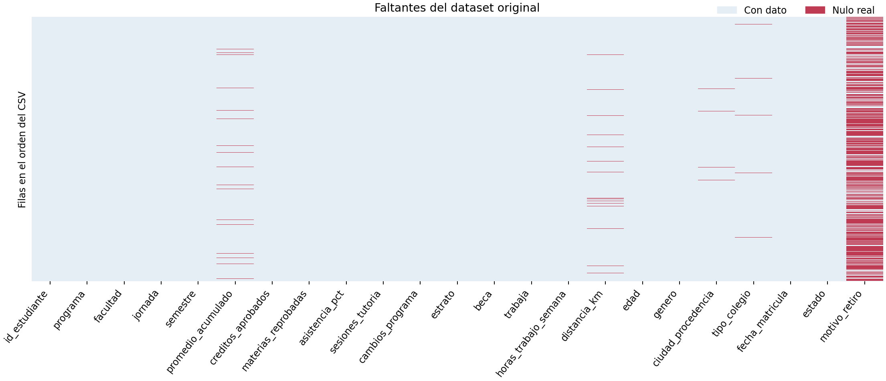
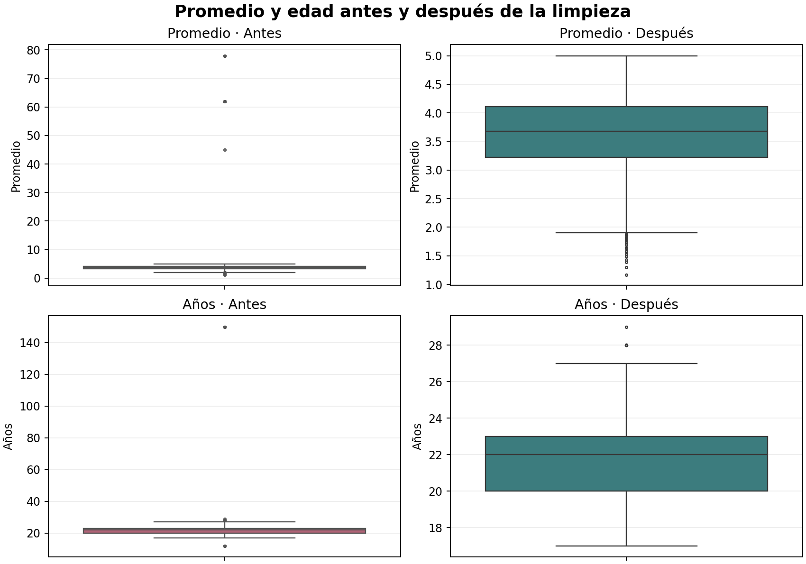
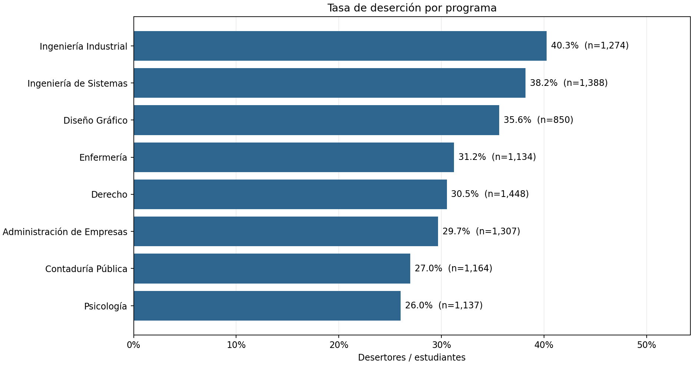
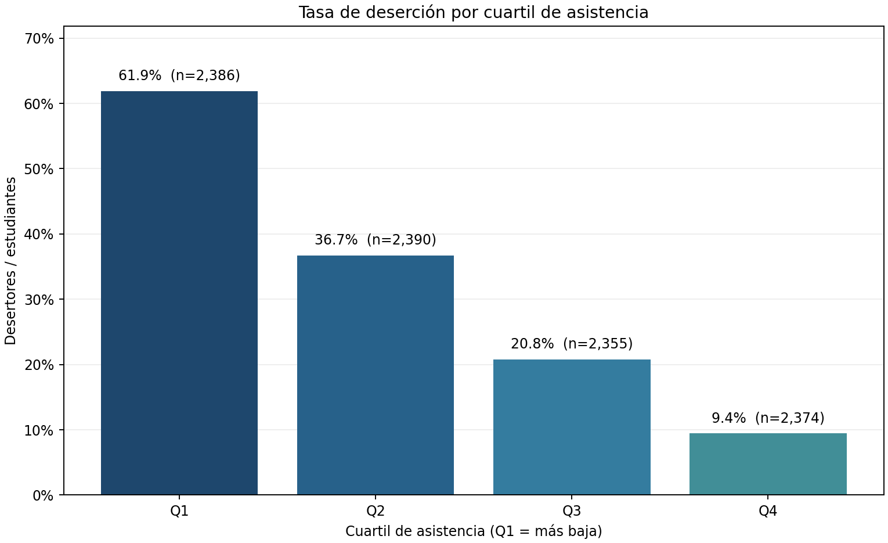

- Registros originales
- 10.150
- Estudiantes analizados
- 9.702
- Desertores
- 3.140
- Tasa de deserción
- 32,36 %
Gráficos del análisis
Nulos del CSV original


Promedio y edad


Deserción por programa


Deserción por asistencia


Las cinco preguntas
1. ¿Qué programa tiene la mayor tasa de deserción?
Ingeniería Industrial, con 513 de 1.274 estudiantes (40,27 %).
| Programa | Estudiantes | Desertores | Tasa |
|---|---|---|---|
| Ingeniería Industrial | 1.274 | 513 | 40,27 % |
| Ingeniería de Sistemas | 1.388 | 530 | 38,18 % |
| Diseño Gráfico | 850 | 303 | 35,65 % |
| Enfermería | 1.134 | 354 | 31,22 % |
| Derecho | 1.448 | 442 | 30,52 % |
| Administración de Empresas | 1.307 | 388 | 29,69 % |
| Contaduría Pública | 1.164 | 314 | 26,98 % |
| Psicología | 1.137 | 296 | 26,03 % |
2. ¿Hay diferencia entre becados y no becados?
La deserción observada en el grupo becado es 14,45 puntos porcentuales menor. El cálculo agrupa por beca y promedia el indicador booleano desertor. Los criterios de selección para recibir beca pueden estar relacionados con la permanencia, por lo que esta diferencia describe una asociación.
| Beca | Estudiantes | Desertores | Tasa |
|---|---|---|---|
| Sí | 2.691 | 590 | 21,92 % |
| No | 7.011 | 2.550 | 36,37 % |
3. ¿Qué jornada tiene el menor promedio acumulado?
La nocturna, con un promedio de 3,465 sobre 5 entre 2.672 estudiantes.
| Jornada | Estudiantes | Promedio acumulado medio |
|---|---|---|
| Nocturna | 2.672 | 3,465 |
| Fin de semana | 950 | 3,704 |
| Diurna | 6.080 | 3,724 |
4. ¿Cuántas materias reprueban los desertores frente a los activos?
Los desertores registran 3,068 materias reprobadas en promedio y los activos 0,622, una diferencia de 2,446. Excluí a los 859 graduados porque corresponden a un tercer estado, fuera de los dos grupos definidos en la pregunta.
| Estado | Estudiantes | Media de materias reprobadas |
|---|---|---|
| Activo | 5.703 | 0,622 |
| Desertor | 3.140 | 3,068 |
5. ¿Aumenta la deserción conforme baja la asistencia?
Sí. En los 9.505 estudiantes con asistencia registrada, la tasa aumenta en cada paso de Q4 a Q1. Entre extremos hay 52,42 puntos porcentuales de diferencia. Las dificultades económicas, los horarios de trabajo o problemas académicos pueden afectar tanto la asistencia como la permanencia. Además, una persona que ya está desvinculándose puede empezar a faltar antes de que se registre el retiro.
| Cuartil | Rango de asistencia | Estudiantes | Desertores | Asistencia media | Tasa |
|---|---|---|---|---|---|
| Q1 | 48,0–80,5 % | 2.386 | 1.476 | 73,907 % | 61,86 % |
| Q2 | >80,5–87,8 % | 2.390 | 877 | 84,403 % | 36,69 % |
| Q3 | >87,8–95,0 % | 2.355 | 489 | 91,334 % | 20,76 % |
| Q4 | >95,0–100,0 % | 2.374 | 224 | 98,659 % | 9,44 % |
Calidad y limpieza
Diagnóstico
La lectura arrojó 10.150 filas y 23 columnas. Las 23 columnas coinciden con el diccionario de la guía. Las 150 filas repetidas explican por qué hay 10.150 registros y 10.000 identificadores distintos.
| Problema | Resultado sobre el CSV original |
|---|---|
| Nulos reales | Promedio: 304. Distancia: 199. Ciudad: 103. Tipo de colegio: 152. Motivo de retiro: 6.877. Las otras 18 columnas tienen cero. |
| Nulos esperados | Los 6.877 motivos vacíos corresponden a 5.977 activos y 900 graduados. Los 3.273 registros de desertores traen motivo. |
| Faltantes disfrazados | 202 guiones en asistencia, 2.822 en horas de trabajo y 152 distancias con valor 999. |
| Formatos mixtos | 300 asistencias con %. Asistencia y horas se leyeron como texto. Hubo 7.098 fechas AAAA-MM-DD y 3.052 DD/MM/AAAA. |
| Duplicados | 150 filas exactas repetidas. Dos estudiantes con los mismos atributos conservarían filas distintas gracias a su identificador. |
| Rangos imposibles | 17 notas mayores que 5 (de 45 a 78), 12 edades fuera de 15–60 (rango original 12–150) y 30 jornadas laborales de 200 horas semanales. |
| Variantes tipográficas | Programa: Ingenieria de Sistemas y Psicologia. Jornada: diurna, nocturna y NOCTURNA. Género: F, M y femenino. Ciudad: BOGOTÁ, Bogota, bogota, medellin y Medellin. Estado ya tenía tres etiquetas uniformes. |
La mezcla de escalas afecta especialmente el análisis del rendimiento. La nota máxima original era 78 y la desviación estándar era 2,72. Los guiones de asistencia también importan porque impiden calcular cuartiles mientras la columna se trate como texto.
Decisiones
- Quité el signo % de 300 asistencias y conservé la escala 0–100. Convertí los guiones de asistencia y horas a nulos antes de convertir ambas columnas a números. Marqué 152 distancias con 999 como faltantes.
- Estandaricé categorías por espacios, mayúsculas, tildes y abreviaturas equivalentes. Cambiaron 260 registros de programa, 485 de jornada, 559 de género y 542 de ciudad. Conservé
Otra ciudadcomo una categoría válida y uséSin datoexclusivamente para la ciudad desconocida. - Interpreté las fechas con sus dos formatos explícitos, sin perder ninguna. Eliminé 150 duplicados exactos y reinicié el índice.
- Eliminé 298 filas sin nota después de quitar duplicados para evitar asignar calificaciones inventadas. Si la falta de nota está relacionada con el estado, excluir estas filas puede afectar las tasas calculadas. Conservé 96 ciudades y 145 tipos de colegio faltantes con la etiqueta
Sin dato. Dejé vacías 334 distancias desconocidas y los 6.562 motivos de retiro que no aplicaban. - Asumí que las 15 notas restantes entre 45 y 78 estaban sobre 100, conforme al escenario de escalas mixtas de la guía. Las dividí entre 20 para llevarlas a la escala 0–5. Reemplacé las 12 edades fuera de 15–60 por la mediana de edades válidas, 22 años. La edad imputada es una estimación.
- Asigné 0 horas a 2.707 estudiantes que reportaron no trabajar y tenían horas faltantes. Marqué 29 valores superiores a 100 como nulos y los imputé con 24 horas, la mediana de horas válidas entre quienes trabajan.
- Creé
desertora partir deestadoycuartil_asistenciaconpd.qcut(). Los cuartiles agrupan valores de asistencia en tamaños parecidos y evitan comparar porcentajes individuales con pocos casos. Los empates en los cortes explican pequeñas diferencias en tamaño. Excluí de esta comparación a 197 estudiantes sin asistencia, que permanecen en las demás preguntas.
El resultado tiene 9.702 estudiantes, 25 columnas y 3.140 desertores (32,36 %). El detalle por operación está en decisiones.csv. Los conteos de auditoría se calculan antes de limpiar y los de la bitácora sobre las filas presentes en cada paso.
Diccionario de datos
El tipo indica cómo se interpreta la columna en el análisis. La auditoría muestra por separado el tipo con el que Pandas leyó el CSV.
| Columna | Tipo | Descripción | Rol |
|---|---|---|---|
| id_estudiante | Texto | Código que distingue a cada estudiante. | Identificación |
| programa | Categórica | Carrera en la que figura el estudiante. | Explicativa |
| facultad | Categórica | Unidad académica a la que pertenece el programa. | Explicativa |
| jornada | Categórica | Horario de estudio: diurno, nocturno o fin de semana. | Explicativa |
| semestre | Numérica discreta | Nivel del plan de estudios que cursa el estudiante. | Explicativa |
| promedio_acumulado | Numérica continua | Nota promedio acumulada en escala de 0 a 5 tras la limpieza. | Explicativa |
| creditos_aprobados | Numérica discreta | Número de créditos que el estudiante ha aprobado. | Explicativa |
| materias_reprobadas | Numérica discreta | Número de asignaturas que el estudiante ha perdido. | Explicativa |
| asistencia_pct | Numérica continua | Porcentaje de asistencia a clases. Se leyó como texto. | Explicativa |
| sesiones_tutoria | Numérica discreta | Cantidad de sesiones de tutoría registradas. | Explicativa |
| cambios_programa | Numérica discreta | Cantidad de cambios de programa registrados. | Explicativa |
| estrato | Categórica ordinal | Estrato socioeconómico registrado, del 1 al 6. | Explicativa |
| beca | Categórica binaria | Indica si el estudiante cuenta con beca. | Explicativa |
| trabaja | Categórica binaria | Indica si el estudiante trabaja. | Explicativa |
| horas_trabajo_semana | Numérica | Horas de trabajo semanales. Se leyó como texto. | Explicativa |
| distancia_km | Numérica continua | Distancia registrada entre la residencia y la institución, en kilómetros. | Explicativa |
| edad | Numérica | Edad del estudiante en años. | Explicativa |
| genero | Categórica | Género registrado en la base. | Explicativa |
| ciudad_procedencia | Categórica | Ciudad de la que procede el estudiante. | Explicativa |
| tipo_colegio | Categórica | Clasificación pública o privada del colegio de procedencia. | Explicativa |
| fecha_matricula | Fecha | Fecha registrada de matrícula. | Explicativa |
| estado | Categórica | Situación registrada: activo, graduado o desertor. | Resultado |
| motivo_retiro | Categórica | Razón de retiro registrada después de la deserción, cuando aplica. | Resultado (detalle posterior) |
Reflexiones
Asociación y causalidad. Que el 21,92 % de los becados deserte frente al 36,37 % de los no becados no permite atribuir la diferencia a la beca. Por ejemplo, el rendimiento previo puede aumentar tanto la probabilidad de recibirla como la de continuar. Para evaluar el efecto compararía estudiantes elegibles con condiciones iniciales similares y mediría su permanencia después de otorgar el beneficio. Una regla de asignación con un umbral claro permitiría estudiar a quienes quedaron justo por encima y justo por debajo.
Variables para predicción. motivo_retiro se registra después de la deserción, por lo que usarlo para una alerta temprana introduciría fuga de información. Su patrón de faltantes también revela el resultado: los 6.877 motivos vacíos de la base original corresponden a activos y graduados. estado final y el indicador desertor son el resultado. Promedio, créditos, tutorías o asistencia solo serían utilizables si se calculan con registros disponibles hasta el día en que se emite la alerta.
Variables sensibles. Género, estrato y procedencia pueden servir para detectar brechas de acceso al apoyo y revisar si un programa funciona de manera equitativa. Usarlas como criterios individuales de exclusión puede estigmatizar a los estudiantes o trasladar desigualdades históricas a la decisión. Por ejemplo, que una ciudad aparezca asociada al retiro puede reflejar barreras de transporte y no una característica individual. Para asignar apoyo priorizaría necesidades observables y usaría resultados agregados por grupo para revisar la cobertura y detectar sesgos.